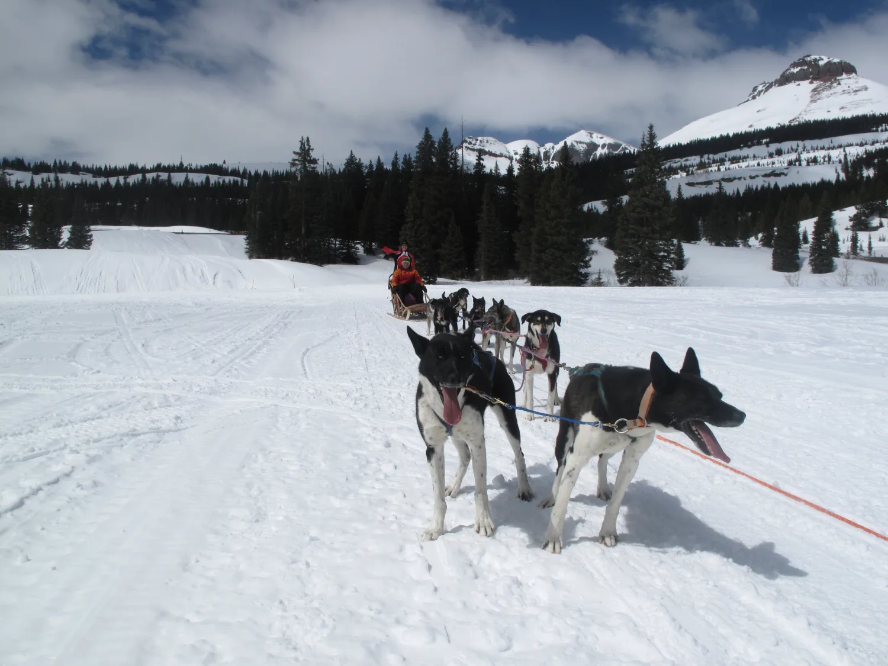

Field Notes
What 25 years of retreats actually taught us.
Plain-spoken essays on what makes a leadership retreat change behavior — and what makes most of them a waste of a good week. Written from the field, not the whiteboard.
Planning guides & ideas
GuideHow to plan a leadership retreat
GuideHow to plan an executive offsite
TemplateLeadership offsite agenda template
Buyer's guideHow to choose an offsite facilitator
Field noteWhy don't our leadership offsites stick?
IdeasLeadership retreat ideas
IdeasExecutive offsite ideas
IdeasCorporate retreat ideas & locations


More in the works.
New field notes on retreat design, measurement, and the formats we keep returning to — from off-road immersions to remote lodges. The fastest way to talk through your team is still a direct conversation.